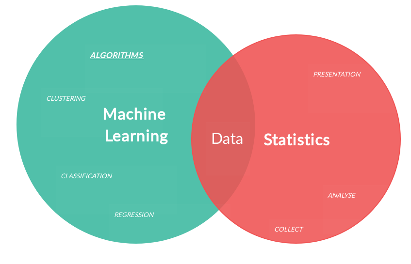

WHAT DO I KNOW?
These are what I am best at!
I have acquired these skills through the academic courses I have completed and through my 3-year work experience with Mu Sigma Business Solutions Pvt Ltd.
The corresponding projects that showcase each of these skills can be viewed under the "PROJECTS" tab.
Database Design, Querying, Data Warehousing
& Business Intelligence
Working for 3 years as a Decision Scientist at Mu Sigma Inc. made me well versed with Database Design, ETL and Data Warehousing concepts, owing to a tremendous amount of hands-on experience and practical exposure.
Extensive use of 'SQL' on 'MS SQL Server', on 'PySpark' & on 'Hadoop/Hive' Big Data platforms has majorly contributed to my proficiency in SQL. Initially, while working for internal stakeholders, I was responsible for designing normalized databases to serve as backend for business process web applications.
Later, as part of the eCommerce team, I was responsible for complex Data Manipulations, Business Report generations, KPI metric evaluations, etc. by design & execution of complex SQL queries.
Additionally, completion of the course "IST 722-Data Warehouse" as part of my master's program helped me get well acquainted with the concepts of designing a star schema data warehouse and populating it using SSIS packages following ETL techniques.
Statistics & Machine Learning

My in-depth understanding and knowledge in Descriptive & Inferential Statistics (Regressions, Gaussian Distributions, Probability, Confidence Intervals, Hypothesis Testing & Time Series Forecasting)
can be attributed to the course "MBC 638-Data Analysis and Decision Making" which I completed as part of my master's program at Syracuse University. I excelled in this course with a score of 96 percentile.
Secondly, I have an excellent understanding of several Machine Learning, Statistical Learning and Deep Learning Algorithms (Regression, Classification, Clustering, Neural Networks), which I implemented using R, Python and PySpark as part of the courses "IST 707-Data Analytics", "IST 718-Big Data Analytics" and "CIS 731-Artificial Neural Networks", which I completed as part of my master's program.
Successful completion of the projects as part of these courses, took me several steps forward in my pursuit for excellence in the Data Science space.
Moreover, working on client projects at Mu Sigma and at iConsult Collaborative has given me sufficient exposure to Data Mining on real world data.
Data Visualization & Dashboarding

As part of my client project at Mu Sigma, and also as part of my academic projects at Syracuse, I was involved in the developing & refreshing user interactive web applications (dashboards) that were built using R Shiny.
These dashboards help to visually track, analyze, and display the metrics, along with their key data points and trends/patterns in the data.
Also, my knowledge in HTML & CSS styling helped me significantly enhance the aesthetic appeal of my web applications.
Moreover, as part of my Data Warehouse course project, I developed a user interactive Power BI dashboard with the goal of delivering effective Business Intelligence.
Text Mining & Natural Language Processing
I have learnt several text processing techniques (Tokenization, n-gram feature extraction, Vectorization, Exploratory Text Analysis etc.) that are used to convert unstructured text data to structured data (Term-Document Matrix) which is suitable for Machine Learning. Completion of the courses "IST 664-Natural Language Processing", "IST 736-Text Mining" and their respective projects helped me learn these text processing techniques and also gain hands on experience with their implementation.
I also got to learn and implement topic modeling algorithms such as LDA & NMF in my "IST 736" project and in my "Altice Innovation Hackathon" project for which I won second prize.
SQL (MS SQL Server, Hadoop/HiveQL, Spark.SQL); R (caret, ggplot, tidyverse); Python (numpy, pandas, scikit-learn, PyTorch, matplotlib, keras); R Shiny; Apache Spark(pyspark.sql, pyspark.ml, pyspark.mllib); HTML/CSS; C#
Tableau; Power BI; Alteryx; SSIS; MS Excel (Vlookup, Pivot Tables, Analysis ToolPak, StatTools, Solver); Hadoop; GIT; MS Visio; MS Access; Bizapp